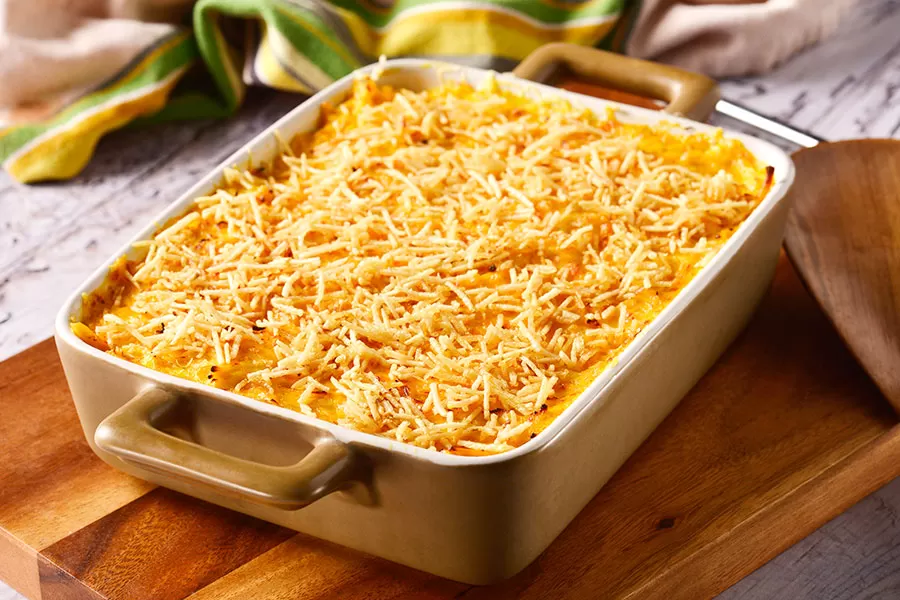

BOLO DE CENOURA

Ingredientes
- 3 cenouras médias
- 3 ovos
- 2 xícaras de açúcar
- 1 xícara de óleo de canola
- 1 pitada de sal
- 2 xícaras de farinha de trigo
- 1 colher de sopa de fermento químico
Ingredientes da calda
- 5 colheres de sopa de açúcar
- 3 colheres de sopa de chocolate em pó
- 2 colheres de sopa de manteiga
- 2 colheres de sopa de leite
Modo de fazer
No liquidificador, coloque 3 cenouras médias, 3 ovos, 1 xícara de óleo de canola e 2 xícaras de açúcar. Bata até ficar homogêneo. Em uma tigela, coloque 2 xícaras de farinha de trigo, 1 pitada de sal e 1 colher de sopa de fermento químico. Misture. Em seguida, adicione a mistura do liquidificador na tigela. Com um fouet, misture até ficar homogêneo. Transfira a massa para uma forma untada e enfarinhada. Leve para assar em forno preaquecido a 180 graus Celsius por 40 minutos.
BOLINHO DE ARROZ
Ingredientes
- 2 xícaras (chá) de arroz cozido
- 1/2 xícara (chá) de leite
- 1 colher (sopa) de fermento em pó
- 1/2 xícara (chá) de farinha de trigo
- óleo para fritar
- 1/2 xícara (chá) de queijo ralado
- 2 colheres (sopa) de cheiro-verde picado
- 1/2 xícara (chá) de amido de milho
- 3 ovos
Modo de fazer
Em um recipiente, misture todos os ingredientes até criar uma massa firme e encorpada. Molde os bolinhos e frite-os no óleo quente, até que fiquem dourados. Escorra sobre papel absorvente.
FRICASSCÊ DE FRANGO
Ingredientes
- 1 lata de creme de leite
- 1 copo de requeijão cremoso
- 2 peitos de frango desfiados
- 100 g de batata palha
- 1 pitada de sal
- 1 lata de milho verde
- 100 g de azeitona sem caroço
- 200 g de mussarela fatiada
- 1 xícara de água
Modo de fazer
Bata no liquidificador o milho, o requeijão, o creme de leite e a água. Refogue o creme do liquidificador com o frango desfiado, as azeitonas e o sal até ficar com uma textura espessa. Coloque o refogado numa assadeira, cubra com mussarela e espalhe a batata palha por cima. Leve ao forno até borbulhar. Sirva com arroz branco.